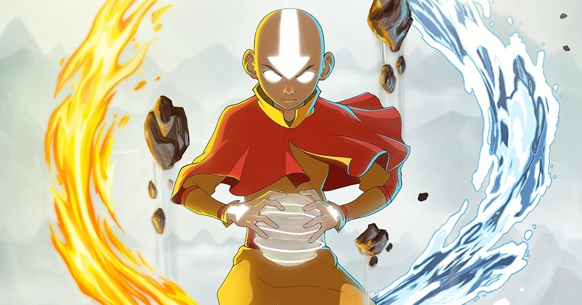

About Aang
Aang is the Avatar and originally from the Southern Air Temple.
Aang in the avatar state
Aang's characteristics
- He is a skilled bender & able to bend all four elements.
- He is bald and has blue arrows all over his body.
- He is kind and friendly.
- He has a strong sense of loyalty and moral.